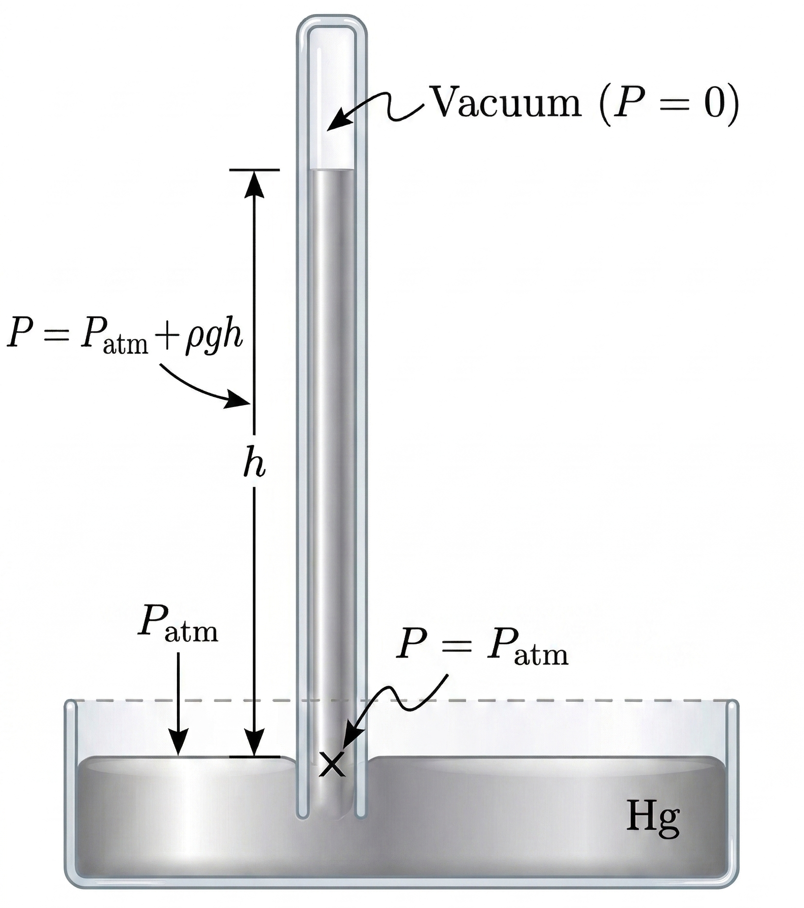

14. Fluid Mechanics#
Apr 16, 2026 | 7002 words | 35 min read
14.1. Fluids, Density, and Pressure#
14.1.1. Characteristics of Solids and Fluids#
Solids are rigid, have specific shapes, and occupy definite volumes. The atoms (or molecules) in a solid are in close proximity to each other, where there is a significant force between the molecules. Solids will take a form that is determined by the forces between the molecules. True solids are compressible, where it usually takes a large force to change the shape of a solid.
The force between the molecules can allow them to organize into a lattice.
The structure of the 3D lattice is represented as molecules connected by rigid bonds (modeled as stiff springs), which allow limited freedom of movement.
Even a large force produces only small displacements in the atoms (or molecules) of the lattice, and the solid maintains its shape. Solids also resist shearing forces (see Section 12.3).
Liquids and gases are both described as fluids of varying viscosity because they yield to shearing forces, whereas solids resist them. Like solids, the molecules in a liquid are bonded to neighboring molecules, but there are fewer (and weaker) bonds.
The molecules in a liquid are not locked in place and can move with respect to each other.
The distance between molecules is similar to the distances in a solid. Liquids have definite volumes, but the shape of a liquid can change depending on the shape of its container.
Gases are not bonded to neighboring atoms and can have large separations between molecules.
Gases have neither specific shapes nor definite volumes, where their molecules move to fill the container.
Liquids deform easily when stressed and do not spring back to their original shape once a force is removed. This occurs because the atoms (or molecules) are free to slide about and change neighbors. Liquids flow with the molecules held together by looser mutual attraction. When a liquid is placed in a container, it remains in the container (given the appropriate temperature and atmospheric pressure). Because the atoms are closely packed liquids resist compression, where an extremely large force is necessary to change the volume of a liquid.
Atoms in gases are separated by large distances and the forces between atoms in a gas are very weak, except when the atoms collide with one another. This makes gases relatively easy to compress and allows them to flow like a fluid. When placed in an open container, gases will escape.
Given the right conditions gases and fluids behave in similar ways, where it is common to drop the distinction and consider them both as fluids. There exists another phase of matter called a plasma, which exists at high temperatures, which is characterized by being composed of ions rather than neutral atoms. Plasma has different properties, which requires a detailed description of electrical charges and forces.
14.1.2. Density#
Suppose a block of brass and a block of wood have exactly the same mass. If both blocks are dropped in a tank of water, why does the wood float and the brass sink? This occurs because the brass has a greater density than water.
Density is an important characteristic of substances because it is crucial in determining whether an object sinks or floats in a fluid.
Density
The average density of a substance or object is defined as its mass per unit volume,
where \(\rho\) (\rho) is the symbol for density, \(m\) is the mass, and \(V\) is the volume.
The SI unit for density is \(\rm kg/m^3\), where Table 14.1. Many materials are more easily measured using lower masses and/or volume which makes the \(\rm cgs\) units system useful. The \(\rm cgs\) density is the gram per cubic centimeter or per milliliter \(\rm mL\), where
The metric system was originally devised so that water would have a density of \(1\ {\rm g/cm^3}\), thus the basic mass unit (the kilogram) was first devised to be the mass of \(1\ {\rm L} = 1000\ {\rm mL}\) volume of water.
Solids |
Liquids |
Gases |
|||
|---|---|---|---|---|---|
Substance |
\(\rho\ ({\rm kg/m^3})\) |
Substance |
\(\rho\ ({\rm kg/m^3})\) |
Substance |
\(\rho\ ({\rm kg/m^3})\) |
Aluminum |
\(2700\) |
Benzene |
\(879\) |
Air |
\(1.29\) |
Bone |
\(1900\) |
Blood |
\(1050\) |
Carbon dioxide |
\(1.98\) |
Brass |
\(8440\) |
Ethyl alcohol |
\(806\) |
Carbon monoxide |
\(1.25\) |
Concrete |
\(2400\) |
Gasoline |
\(680\) |
Helium |
\(0.18\) |
Copper |
\(892\) |
Glycerin |
\(1260\) |
Hydrogen |
\(0.09\) |
Cork |
\(240\) |
Mercury |
\(13{,}600\) |
Methane |
\(0.72\) |
Earth’s crust |
\(3300\) |
Olive oil |
\(920\) |
Nitrogen |
\(1.25\) |
Glass |
\(2600\) |
Nitrous oxide |
\(1.98\) |
||
Gold |
\(19{,}300\) |
Oxygen |
\(1.43\) |
||
Granite |
\(2700\) |
||||
Iron |
\(7860\) |
||||
Lead |
\(11{,}300\) |
||||
Oak |
\(710\) |
||||
Pine |
\(373\) |
||||
Platinum |
\(21{,}400\) |
||||
Polystyrene |
\(100\) |
||||
Tungsten |
\(19{,}300\) |
||||
Uranium |
\(18{,}700\) |
The density of an object may help its composition. The density of gold is \({\sim}2.5\times\) the density of iron, which itself is about \({\sim}2.5\times\) the density of aluminum. The densities of liquids and solids are roughly comparable, which is consistent with the expectation (and measurement) of the close proximity of their atoms. The densities of solids and liquids are given for the standard temperature of \(0^\circ{\rm C}\), where they can vary depending on the temperature.
The densities of gases are much less than those of liquids and solids because the atoms in gases are separated by large amounts of empty space. The gases (in Table 14.1) are displayed for a standard temperature of \(0^\circ{\rm C}\) and pressure of \(101.3\ {\rm kPa}\), where there is a strong dependence on the temperature and pressure.
Substance |
Temperature |
\(\rho\ ({\rm kg/m^3})\) |
|---|---|---|
Ice |
\(0^\circ{\rm C}\) |
\(917\) |
Water |
\(0^\circ{\rm C}\) |
\(999.8\) |
Water |
\(4^\circ{\rm C}\) |
\(1000\) |
Water |
\(20^\circ{\rm C}\) |
\(998.2\) |
Water |
\(100^\circ{\rm C}\) |
\(958.4\) |
Steam |
\(100^\circ{\rm C},\ 101.3\ {\rm kPa}\) |
\(167.0\) |
Sea water |
\(0^\circ{\rm C}\) |
\(1030\) |
Table 14.2 shows the density of water in various phases in temperature. As the temperature decreases, the density of water increases and reaches a maximum at \(4.0^\circ{\rm C}\). It then decreases as the temperature falls below \(4.0^\circ{\rm C}\), where this behavior explains why ice forms at the top of body of water (i.e., ponds and lakes freeze from the top-down).
A homogenous substance is described by a uniform density throughout its volume (e.g., a solid iron bar). The density of any sample of a homogenous substance is the same as the average density. In contrast, a heterogeneous substance does not have a constant density throughout the substance (e.g., a chunk of Swiss cheese with solids and voids). The density at a specific location within a heterogeneous material is called local density, and is given as a function of location, \(\rho = \rho(x,\,y,\,z)\), as shown in Figure 14.1.
Fig. 14.1 Image Credit: Openstax.#
Local density can be obtained by taking the limit where the size of the volume approaches zero,
where \(\rho\) is the density, \(m\) is the mass, and \(V\) is the volume.
Since gases are free to expand and contract, the densities of the gases vary considerably with temperature. The densities of liquids are often treated as constant (i.e., equal to the average density).
Density is a dimensional property, where it often convenient to normalize the density to make it dimensionless and is then called the specific gravity. Specific gravity is defined as the ratio of the density relative to water at \(4.0^\circ{\rm C}\) and one atmosphere of pressure (i.e., \(101.3\ {\rm kPa}\)), which is \(1000\ {\rm kg/m^3}\):
Specific gravity provides a ready comparison among materials without have to worry about the unit of density. For instance the density of aluminum is \(2700\ {\rm kg/m^3}\), but its specific gravity is \(2.7\). Specific gravity is particularly useful quantity with regard to buoyancy.
14.1.3. Pressure#
You are likely familiar with the different kinds of pressure, whether it is your blood pressure or in relation to the weather. But we provide a formal definition of pressure in terms of a force.
Pressure
{Pressure} (\(P\)) is defined as the normal force \(F_\perp\) per unit area \(A\) over which the force is applied, or
To define the pressure at a specific point, the pressure is defined as the force \(dF\) exerted by a fluid over an infinitesimal element of area \(dA\) containing the point, resulting in \(p = \frac{dF}{dA}.\)
A given force can have a significantly different effect depending on the area over which the force is exerted. For example, a given force \(F\) applied to over an area of \(1\ {\rm mm^2}\) is \(100\times\) as great as the same force applied to an area of $1\ {\rm cm^2}. That is why a sharp needle is able to poke through the skin with a small force, but the same force does not allow your finger to poke through the skin (see Figure 14.2).
Fig. 14.2 Image Credit: Openstax.#
Although force is a vector, pressure is a scalar. Pressure represents the normal component of the force per unit area. In general it is defined as
where \(\hat{n}\) is the unit vector normal to the surface. This dot product extracts the component of force perpendicular to the surface, which is why the pressure is a scalar quantity. The SI unit for pressure is the pascal (\(\rm Pa\)), which was named after Blaise Pascal, where
14.1.3.1. Variation of pressure with depth in a fluid of constant density#
Pressure is defined for all states of matter, but it is particularly important for fluids. An important characteristic of fluids is that there is no significant resistance to the parallel component of force applied parallel to the surface of a fluid. The molecules of the fluid simply flow to accommodate the horizontal force. A force applied perpendicular to the surface compresses or expands the fluid. If you try to compress a fluid, you find that a reaction force develops at each point inside fluid in the outward direction, which balances the force applied on the molecules at the boundary.
Consider a fluid of constant density (see Figure 14.3). The pressure at the bottom of the container is due to the pressure of the atmosphere \(P_o\) plus the pressure due to the weight of fluid divided by the area. The weight of the fluid at a given height depends on the mass of enclosed fluid times the acceleration due to gravity.
Fig. 14.3 Image Credit: Openstax.#
Since the density is constant, the weight of the mass enclosed can be calculated using the density:
where we have used the volume of a cylinder with the area \(A\) at the bottom of the container and \(h\) is the height of the cylinder. The pressure at the bottom of the container is related to the atmospheric pressure \(P_o\) by
Note: this equation is only good for pressure at a depth for a fluid of constant density.
14.1.3.2. Example Problem: Force on a Dam#
14.1.3.3. Pressure in a static fluid in a uniform gravitational field#
A static fluid is not in motion and at any point within the fluid, the pressure on all sides must be equal. Otherwise the fluid at that point would accelerate due to a net force.
The pressure at any point depends only on the depth at that point. Pressure in a fluid near Earth varies with depth due to the weight of fluid above a particular level. Previously, we assumed that the density is constant and the average density is a a good approximation of the density of any given sample of the material. This is a reasonable approximation for liquids like water, where large forces are required to compress or change the volume.
In a swimming pool, the density is approximately constant, where the water at the bottom is compressed very little by the weight of the water on top.
Traveling upward in the atmosphere, you notice that the density of the air begins to change significantly just a short distance above Earth’s surface.
Let’s start with the assumption that the density of the fluid is not constant. This allows us to derive a formula for the variation of pressure with depth in a tank containing a fluid of density \(\rho\) on Earth’s surface. At deeper levels, a fluid sample is subjected to more force than a fluid sample nearer to the surface due to the weight of the fluid above it. Therefore, the pressure calculated a given depth is different than the pressure calculated using a constant density (i.e., we cannot use Eqn. (14.4)).
Fig. 14.4 Image Credit: Openstax.#
Imagine a thin element of fluid at a depth \(h\) (see Figure 14.4). The element has a cross-sectional area \(A\) and a thickness \(\Delta y\). The forces acting on the element are due the pressure \(P(y)\) above and \(P(y+\Delta y)\) below it.
Since the element of fluid between \(y\) and \(y+\Delta y\) is not accelerating , the forces are balanced. There are 3 forces acting on the mass element from the:
pressure downward from the top: -\(P(y)A\),
pressure upward from the bottom\(: \)P(y+\Delta y)A$,
weight of the fluid element downward: \(-(\Delta m)g\).
We used a Cartesian coordinate system with the \(y\)-axis pointed in the \(+\hat{j}\) direction to assign the direction for each force. We find the following equation via Newton’s 2nd law:
where \(\Delta y < 0\).
Note
If the fluid element had a non-zero \(y\)-component of acceleration the right-hand side would not be zero. Instead it would be the mass times the \(y\)-acceleration from Newton’s 2nd law.
The mass element can be written in terms of the density of the fluid and the volume of the fluid element:
Since \(\Delta y < 0\), this means that \(\Delta m >0\). Substituting this expression into our previous equation, we find
We find the variation of pressure with depth (or pressure gradient) in a fluid by taking the limit of an infinitesimally thin element \(\Delta y \rightarrow 0\), or
This equation tells us that the pressure’s rate of change with depth is proportional to the density of the fluid. The solution of this equation depends upon the whether the density is constant or changes with depth (i.e., a function \(\rho(y)\)).
If the range of the depth begin analyzed is small enough, we can assume the density is constant. But if the range of depth is too large so that the density varies appreciably (e.g., the atmosphere), we need to take the change in density with depth into account. In that case, we cannot use the approximation of a constant density.
14.1.3.4. Pressure in a fluid with a constant density#
To solve the differential form of pressure (Eqn. (14.7)), we need to integrate and then, we find a formula for the pressure \(P\) at a depth \(h\) from the surface. Let’s consider a tank of liquid (e.g., water; see Fig. 14.5), where the surface is subject to the atmospheric pressure \(P_o\).
Fig. 14.5 Image Credit: Openstax.#
At \(y=0\), the pressure is simply the atmospheric pressure \(P_o\) and there is a pressure at a depth \(h\) equal to \(-y\). Setting this up as an integral, we have
Thus, pressure at a depth of fluid near Earth’s surface is equal to the atmospheric pressure added to the pressure at the given depth \(h\), which is given by \(\rho gh\).
14.1.3.5. Variation of atmospheric pressure with height#
The change in atmospheric pressure with height is conceptually similar to that of an increasing depth. However, we must include assumptions based on the kinetic theory of gases. Let’s first make two key assumptions:
the air temperature is approximately constant, and
the ideal gas law approximately describes the atmosphere.
These assumptions are accurate (at least locally) for a parcel of gas at a given height \(h\). Since we are using the ideal gas law, we must also define some other parameters, such as:
\(P(y)\) is the atmospheric pressure at height \(y\) above Earth’s surface.
\(\rho(y)\) is the density of air at a height \(y\).
The temperature is measured using the Kelvin scale (\(K\)).
The mass \(m\) of a molecule of air is related to the temperature and pressure through the ideal gas law, or
In the ideal gas law, \(N\) is the number of molecules and \(k_{\rm B}\) is Boltzmann’s constant (\(k_{\rm B} = 1.38\times 10^{-23}\ {\rm J/K}\)).
Note
You may have encountered another version of the ideal gas law from your chemistry classes in this form: \(PV = nRT\), where \(n\) is the number of moles and \(R\) is the ideal gas constant (\(R = 8.314\ {\rm J/K/mol}\)). These are two different ways to write the same formula because of the relationship between \(R\) and \(k_{\rm B}\), or
where \(N_{\rm A}\) is Avogadro’s number.
Our formula relates the pressure \(P\) to the density \(\rho\). Thus, if pressure varies with height, so does the the density. By solving the ideal gas law relation in terms of the density \(\rho\) and substituting into Eqn. (14.7) we have
We can replace the constants inside the parentheses with a single symbol \(\alpha\) to make the equation simpler (so that we can integrate it):
To solve this differential equation, we use the method of separation of variables, which means that we collect like variables to each side of the equation. Then we have
First-order Separable Differentiable Equation
The indefinite integral of \(dx/x\) is introduces the natural log function \(\ln{x}\), or
We can also write this in terms of the exponential function \(e^x\), or
Using our known properties of exponents/logarithms (e.g., \(e^{A}e^{B} = e^{A+B}\) and \(e^{\ln{x}} = x\)), we can convert our formula to
Evaluating the integral at the applicable limits gives us
Using our known properties of exponential functions (e.g., \(x = e^{\ln{x}}\)), we have the solution
Note
Some authors use the \(\exp\) function so that it is clear what is within the exponential due to the limitations of typesetting with superscripts and subscripts. Thus, our solution can also be written as
Our expression shows us that the atmospheric pressure drops exponentially with height since we measure the height from the ground-up. The pressure drops by a factor of \(1/e\) when the height is \(1/\alpha\). Thus, we interpret \(\alpha\) physically as a length scale that characterizes how pressure varies with height. As a result, it is often called the pressure scale height.
Air is composed of \({\sim} 78\%\) nitrogen \(\rm N_2\) and \(21\%\) oxygen \(\rm O_2\). We can approximate \(\alpha\) by using the mass of a nitrogen molecule as a proxy for an air molecule. At a temperature of \(300\ {\rm K}\) (or \(27^\circ{\rm C}\)), we find
For every \(9080\ {\rm m}\), the air pressure drops by a factor of \(1/e\), or approximately one-third of its value. This gives us only a rough estimate of the true change in pressure with height. Our assumptions of a constant temperature and a constant \(g\) over such a distance (i.e., nearly the entire troposphere) is not accurate in reality.
14.1.3.6. Direction of pressure in a fluid#
Fluid pressure has no direction (i.e., it is a scalar quantity), whereas the forces due to pressure have well-defined directions: They are always exerted perpendicular to any surface. The reason is that fluids cannot withstand (or exert) shearing forces.
In a static fluid enclosed in a tank, the force exerted on the walls of the tank is exerted perpendicular to the inside surface. Likewise, pressure is exerted to the surfaces of any object within a fluid. Figure 14.7 illustrates the pressure exerted by air on the walls of a tire and by water on the body of a swimmer.
Fig. 14.7 Image Credit: Openstax.#
14.2. Measuring Pressure#
14.2.1. Gauge vs. Absolute Pressure#
Suppose the pressure gauge on full scuba tank reads \(3000\ {\rm psi}\), which is approximately \(207\ {\rm atm}\). When the valve is opened, air begins to escape because the pressure inside the tank is grater than the atmospheric pressure outside the tank. Air continues to escape form teh tank until the pressure inside the tank equals the pressure of the atmosphere outside the tank. At this point, the pressure gauge on the tank reads, zero even though the pressure inside the tank is actually \(1\ {\rm atm}\) (i.e., the same air pressure outside the tank).
Most pressure gauges are calibrated to read zero at atmospheric pressure. Pressure reading from such gauges are called gauge pressure, which is the pressure relative to the atmospheric pressure. When the pressure inside the tank is greater than atmospheric pressure, the gauge reports a positive value.
Some gauges are designed to measure negative pressure. For example, many physics experiments must take place in a vacuum chamber where nearly all the air is pumped out. the pressure inside the vacuum chamber is less than atmospheric pressure, so te pressure on the gauge reads a negative value.
Unlike gauge pressure, absolute pressure accounts for atmospheric pressure, which in effect adds to the pressure in any fluid not enclosed in a rigid container.
Absolute Pressure
The absolute pressure, or total pressure, is the sum of gauge pressure and atmospheric pressure:
where \(P_{\rm abs}\) is the absolute pressure, \(P_{\rm g}\) is the gauge pressure, and \(P_{\rm atm}\) is the atmospheric pressure.
For example, if a tire gauge reads \(34\ {\rm psi}\), then the absolute pressure include the atmospheric pressure (\(14.7\ {\rm psi}\)), or \(34\ {\rm psi} + 14.7\ {\rm psi} = 48.7\ {\rm psi}\).
In most cases, the absolute pressure in fluids cannot be negative. Fluids push rather than pull, so the smallest absolute pressure in a fluid is zero. Thus, the smallest possible gauge pressure is \(P_{\rm g} = -P_{\rm atm}\), which makes \(P_{\rm abs} = 0\). There is no theoretical limit for how large a gauge pressure can be.
14.2.2. Measuring Pressure#
A host of devices are used for measuring pressure, ranging from tire pressure gauges to blood pressure monitors. Any property that changes with pressure in a known way can be used to construct a pressure gauge. Some of the most common types include
strain gauges, which use the change in the shape of a material with pressure,
capacitance pressure gauges, which use the change in electric capacitance due to shape change with pressure,
piezoelectric pressure gauges, which generate a voltage difference across a piezoelectric material under a pressure difference between two sides, and ion gauges, which measure pressure by ionizing molecules in highly evacuated chambers.
Different pressure gauges are useful in different pressure ranges and physical situations. Some examples are shown in Figure 14.8.
Fig. 14.8 Image Credit: Openstax.#
14.2.2.1. Manometers#
One of the most important classes of pressure gauges applies the property that pressure due to the weight of a fluid of constant density is given by \(P = \rho gh\). The U-shaped tube shown in Figure 14.9 is an example of a manometer. In Fig. 14.9a, both sides of the tube are open to the atmosphere, which allows atmospheric pressure to push down on each side equally so that its effects cancel.
Fig. 14.9 Image Credit: Openstax.#
A manometer with only one side open to the atmosphere is an ideal device for measuring gauge pressures. The gauge pressure is \(P_{\rm gauge} = \rho gh\) and is found by measuring \(h\). For example, suppose one side of the U-tube is connected to some source of pressure \(P_{\rm abs}\) (e.g., the ballon in Fig. 14.9b or the vacuum-packed peanut jar in Fig. 14.9c).
Pressure is transmitted undiminished to the manometer, and the fluid levels are no longer equal. In Fig. 14.9b, \(P_{\rm abs}>P_{\rm atm}\) and in Fig. 14.9c, \(P_{\rm abs}< P_{\rm atm}\). In both cases, \(P_{\rm abs}\) differs from the atmospheric pressure by an amount \(\rho gh\), where \(\rho\) is the density of the fluid in the manometer.
In Fig. 14.9b, \(P_{\rm abs}\) can support a column of fluid of height \(h\), so it must exert a pressure \(\rho gh\) greater than atmospheric pressure. In Fig. 14.9c, the atmospheric pressure can support a column of fluid of height \(h\), so the absolute pressure is less than atmospheric pressure by an amount \(\rho gh\)
14.2.2.2. Barometers#
A barometer is a device that typically uses a single column of mercury to measure atmospheric pressure, which is in contrast to the U-shaped tube of a manometer. The barometer (invented by Evangelista Torricelli) is constructed from a glass tube closed at one end and filled with mercury. The tube is then inverted and placed in a pool of mercury. A barometer measures atmospheric pressure (rather than gauge pressure) because there is a nearly pure vacuum above the mercury in the tube. The height of the mercury is such that \(P_{\rm atm} = \rho gh\) and the height changes when the atmospheric pressure varies.

Fig. 14.10 Image Credit: Generated using Gemini.#
Weather forecasters closely monitor changes in atmospheric pressure because it signals a change in the weather. The barometer can also be used as an altimeter, since the average atmospheric pressure varies with altitude. Mercury barometers and manometer are common enough so that millimeter heights of mercury (\(\rm mm\ Hg\)) are quoted for atmospheric and blood pressures.
14.2.2.3. Units of pressure#
The SI unit for pressure is the pascal (\(\rm Pa\)), where \(1\ {\rm Pa} = 1\ {\rm N/m^2}\). In addition to the pascal, there are many other units for pressure in common use (see Table 14.3). Im meteorology, atmospheric pressure is often describe in the units of millibars (\(\rm mbar\)), where
The millibar is convenient for meteorologists because the average atmospheric pressure at sea level on Earth is \(1.013 \times 10^5\ {\rm Pa} = 1013\ {\rm mbar} = 1\ {\rm atm}\). Using the equations derived when considering pressure at a depth of fluid, pressure can also be measured as millimeters (or inches) of mercury.
The pressure at the bottom of a \(760{-}{\rm mm}\) column of mercury at \(0^\circ\) in barometer is equal to the atmospheric pressure. Thus, \(760\ {\rm mm\ Hg}\) is also used in place of one atmosphere of pressure.
In vacuum physics labs, scientists often use another unit called \(\rm torr\) (named after Torricelli), where \(1\ {\rm torr} = 1\ {\rm mm\ Hg}\).
Unit |
Equivalent in Pascals |
|---|---|
Pascal (Pa) |
\(1\ {\rm Pa} = 1\ {\rm N/m^2}\) |
pound per square inch (psi) |
\(1\ {\rm psi} = 6895\ {\rm Pa}\) |
atmosphere (atm) |
\(1\ {\rm atm} = 1.013\times10^{5}\ {\rm Pa}\) |
bar |
\(1\ {\rm bar} = 10^{5}\ {\rm Pa}\) |
torr (mm Hg) |
\(1\ {\rm torr} = 133.3\ {\rm Pa}\) |
inches of mercury (in Hg) |
\(1\ {\rm in\ Hg} = 3386\ {\rm Pa}\) |
millibar (mbar) |
\(1\ {\rm mbar} = 100\ {\rm Pa}\) |
14.2.2.4. Example Problem: Fluid Heights in an Open U-Tube#
14.3. Pascal’s Principle and Hydraulics#
14.3.1. Pascal’s Principle#
In 1653, Blaise Pascal published his Treatise on the Equilibrium of Liquids, in which he develops his principles of static fluids. When a fluid is not flowing (i.e., static), we say that the fluid is in static equilibrium. If the fluid is water, we say it is in hydrostatic equilibrium. For a fluid in static equilibrium, the net force on any part of the fluid be zero because the fluid will would otherwise start to flow.
Pascal’s observations provide the foundation for hydraulics. Pascal observed that a change in pressure applied to an enclosed fluid is transmitted undiminished throughout the fluid and to the walls of the container. Pascal’s principle implies that the total pressure in a fluid is the sum of the pressures from different sources.
Note that this principle does not say that the pressure is the same at all points of a fluid. A good example is the fluid at a depth depends on the depth of the fluid and the pressure of the atmosphere. Rather, Pascal’s principle applies to the change in pressure.
Fig. 14.11 Image Credit: Openstax.#
Suppose you place some water in a cylindrical container of height \(h\) and cross-sectional area \(A\) that has a movable piston of mass \(m\) (see Figure 14.11). Adding a weight \(w = Mg\) at the top of the piston increases the pressure at the top by \(w/A = Mg/A\), since the additional weight also acts over the area \(A\) of the lid by
According to Pascal’s principle, the pressure at all points in the water changes by the same amount, \(Mg/A\). Thus the pressure at the bottom also increases by \(Mg/A\). The pressure at the bottom of the container is equal to the sum of
the atmospheric pressure,
the pressure due to the fluid, and
the pressure supplied by the mass.
The change in pressure at the bottom of the container due to the mass is
Since the pressure changes are the same everywhere in the fluid, we no longer need subscripts to designate the pressure change for the top or bottom, where
14.3.2. Applications of Pascal’s Principle and Hydraulic Systems#
Hydraulic systems are used to operate automotive brakes, hydraulic jacks, and many other mechanical systems (see Figure 14.12). We can derive a relationship between the forces in a simple hydraulic system by applying Pascal’s principle.
Fig. 14.12 Image Credit: Openstax.#
The two pistons (in Fig. 14.12) are at the same height, so there is no difference in pressure due to a difference in depth. The pressure due to \(F_1\) action on area \(A_1\) is simply
According to Pascal’s principle, the pressure is transmitted undiminished throughout the fluid and to all walls of the container. Thus, a pressure \(p_2\) is felt at the other piston that is equal to \(p_1\) (i.e., \(p_1=p_2\)). However, \(p_2 = F_2/A_2\), for this to be so, we find that
This equation relates the ratios of force to area in any hydraulic system, provided that the pistons are at the same vertical height and that friction in the system is negligible.
Hydraulic systems can increase or decrease the force applied to them. To mak the force larger, te pressure is applied to a larger area. For example if a \(100\)-\(\rm N\) force is applied to the left cylinder in Figure 14.12 and the right cylinder has an area \(5\times\) greater, then the output force is \(500\ {\rm N}\). Hydraulic systems are analogous to simple levers, but they have the advantage tha pressure can be sent through curved lines to several places at once.
The hydraulic jack is used to lift heavy loads, such as those used by auto mechanics to raise an automobile. It consists of an incompressible fluid filled in a U-tube fitted with a movable piston on each side. One side of the U-tube is narrower than the other. A small force applied over a small area can balance a much larger force on the other side over a larger area (see Figure 14.13).
Fig. 14.13 Image Credit: Openstax.#
From Pascal’s principle, we find that the force needed to lift the care is less than the weight of the car:
where \(F_1\) is the force applied to lift the car, \(A_1\) is the cross-sectional area of the smaller piston, \(A_2\) is the cross-sectional area of the larger piston, and \(F_2\) is the weight of the car.
14.3.3. Example Problem: Calculating Force on Wheel Cylinders#
14.4. Archimedes’ Principle and Buoyancy#
When placed in a fluid, some objects float due to a buoyant force (see Figure 14.14).
Where does this buoyant force come from?
Why is it that some things float and others do not?
Do objects that sink get any support at all from the fluid?
Is your body buoyed by the atmosphere, or are helium balloons affected?
Fig. 14.14 Image Credit: Openstax.#
Pressure increases with depth in a fluid!
This means that the upward force on the bottom of an object (in a fluid) is greater than the downward force on top of the object. There is an upward, or buoyant, force on any object in any fluid (see Figure 14.15).
Fig. 14.15 Image Credit: Openstax.#
If the buoyant force is greater than the object’s weight, the net force on the object is upward. If we release such an object, it will rise in the fluid.
If the buoyant force is less than the object’s weight, the object sinks when released.
If the buoyant force equals the object’s weight, the object can remain suspended at its present de[th, either immersed in the fluid or partly above the surface.
The buoyant force is always present, whether the object floats, sinks, or is suspended in a fluid.
Buoyant Force
The buoyant force is the upward force on any object in any fluid.
14.4.1. Archimedes’ Principle#
Just how large is the buoyant force?
Consider what happens when a submerged object is removed from a fluid (see Figure 14.16). If the object were not in the fluid, the space the object occupied would be filled by fluid having a weight \(w_{\rm fl}\). This weight is supported by the surrounding fluid, so the buoyant force must equal \(w_{\rm fl}\), or the weight of the fluid displaced by the object.
Fig. 14.16 Image Credit: Openstax.#
Archimedes’ Principle
The buoyant force on an object equals the weight of the fluid it displaces. In equation form, Archimedes’ principle is
where \(F_{\rm B}\) is the buoyant force and \(w_{\rm fl}\) is the weight of the fluid displaced by the object.
This principle is named after the Greek mathematician and inventor Archimedes of Syracuse, who state this principle long before concepts of force were well established.
Archimedes’ principle refers to the force of buoyancy that results when a body is submerged in a fluid, whether partially or wholly. The force that provides the pressure of a fluid acts on a body perpendicular to the surface. The force due to the pressure at the bottom is pointed up, while at the tope, the force due to the pressure is pointed down. The forces due to pressures at the sides are pointing into the body.
Since the bottom of the body is at a greater depth than the top, the pressure at the lower part of the body is higher than the pressure at the upper part (as shown in Fig. 14.15). Therefore a net upward force acts on the body. This upward force is the force of buoyancy.
14.4.2. Density and Archimedes’ Principle#
If you drop a lump of clay in water, it will sink. But if you mold the same lump of clay into the shape of a boat, then it will float. The clay boat displaces more water than the lump and experiences a greater buoyant force, even though its mass is the same.
The average density of an object is what ultimately determines whether it floats. If an object’s average density is less than that of the surrounding fluid, it will float. The fluid has a higher density, which means contains more mass for a given volume and hence more weight. The buoyant force is greater than the weight of the object. An object denser than the fluid will sink.
In Figure 14.17, the unloaded ship has a lower density and less of it is submerged compared with the loaded ship. We can derive a quantitative expression for the fraction submerged by considering density.
Fig. 14.17 Image Credit: Openstax.#
The fraction submerged is the ratio of the volume submerged to the volume of the object, or
The volume submerged \(V_{\rm sub}\) equals the volume of the fluid displaced \(V_{\rm fl}\). We can obtain the relationship between the densities by substituting \(\rho = m/V\), or \(V= m/\rho\). This gives
where \(\rho_{\rm obj}\) is the average density of the object and \(\rho_{\rm fl}\) is the density of the fluid. Since the object floats, its mass and that of the fluid displaced are equal (i.e., \(m_{\rm obj} = m_{\rm fl}\)), leaving
We can determine the density of an unknown fluid using an object of a known density and measuring the fraction of it that is submerged.
Numerous lower-density objects or substances float in higher density fluids, such as:
oil on water,
a hot-air ballon in the atmosphere,
a bit of cork in wine,
an iceberg in salt water, and
hot wax in a “lava lamp.
A less obvious example is that mountain ranges float on the higher density crust and mantle beneath them.
14.4.3. Measuring Density#
A common technique to measure density is to use a scale balance (see Figure 14.18), where you weigh the object (e.g., a coin) in air and then weigh it again submerged in a liquid of known density (e.g., water). The density of the object can be calculated and your (fool’s) gold can be authenticated.
Fig. 14.18 Image Credit: Openstax.#
This calculation is based on Archimedes’ principle, where the buoyant force on an object is equal to the weight of the fluid it displaces. This means that the object appears to weigh less when submerged. The weight measured while submerged is called the object’s apparent weight.
The object suffers an apparent weight loss equal to the weight of the fluid displaced. On balances that measure mass, the object suffers an apparent mass loss equal to the mass of fluid displaced.
14.4.4. Example Problem: Calculating Average Density#
14.5. Fluid Dynamics#
In contrast to static fluids, there is the study of fluids in motion or fluid dynamics. Even the most basic forms of fluid motion can be quite complex. For this reason, we limit our investigation to ideal fluids in many of the examples. In ideal fluid is a fluid with negligible viscosity, where viscosity is a measure of the internal friction in a fluid.
14.5.1. Characteristics of Flow#
Velocity vectors are often used to illustrate fluid motion in applications like meteorology. Wind can be modeled as a fluid motion of air in the atmosphere and represented by vectors indicating the speed and direction of the wind at any given point on a map. Figure 14.19 shows velocity vectors describing the winds during Hurricane Arthur in 2014.
Fig. 14.19 Image Credit: Openstax.#
Another method for representing fluid motion is a streamline. A streamline represents the path of a small volume of fluid as it flows. The velocity is always tangential to the streamline. Figure 14.20 illustrates two examples of fluids moving through a pipe.
Fig. 14.20 Image Credit: Openstax.#
There are two extremes of fluid flow:
laminar flow (sometimes called steady flow) is represented by smooth, parallel streamlines. The velocity of the fluid is greatest in the center and decreases near the walls of the pipe. The gradient in velocity is due to the viscosity of the fluid and friction between the pipe walls and the fluid.
turbulent flow has streamlines that are irregular and change over time. In turbulent flow the paths of the fluid flow are irregular as different parts of the fluid mix together or form small circular regions that resemble whirlpools.
14.5.2. Flow Rate and its Relation to Velocity#
The volume of fluid passing by a given location through an area during a period of time is called the flow rate \(Q\), or volume flow rate. This is written as
where \(V\) is the volume and \(t\) is the elapsed time.
Fig. 14.21 Image Credit: Openstax.#
In Figure 14.21, the volume of the cylinder is \(Ax\) and thus, the flow rate is
The SI unit for flow rate is \(\rm m^3/s\), but several other units are in common use, such as liters per minute (\(\rm L/min\)).
Flow rate and velocity are related, but measure different physical quantities. To make the distinction clear, consider the flow rate of a river. The greater the velocity of the water, the greater the flow rate of the river. Flow rate depends on the size and shape of the river. A rapid mountain stream carries far less water than the Amazon River.
Figure 14.21 illustrates the volume flow rate, which is given by \(Q = \frac{dV}{dt} = Av\) and depends on the cross-sectional area \(A\) of the pipe, as well as the average speed \(v\). The relationship tells us that the larger the conduit, the greater its cross-sectional area. In Fig. Figure 14.21, the shaded cylinder has a volume \(V = Ad\), which flows past the point \(P\) in a time \(t\). Dividing both sides by \(t\) gives
Since the average speed is given by \(v=d/t\) and the flow rate is the changing volume over time (\(Q = V/t\)), this means that \(Q = Av\).
Fig. 14.22 Image Credit: Openstax.#
Figure 14.22 shows an incompressible fluid flowing along a pipe of decreasing radius. Because the fluid is incompressible, the same amount of fluid must flow past any point in the tube in a given time to ensure continuity of flow. The flow is continuous because there are no sources (or sinks) to add (or remove) mass. The mass flowing into the pipe must equal the mass flowing out of the pipe.
In this case, the cross-sectional area of the pipe decreases and the velocity must necessarily increase. This logic can be extended to say that the flow rate must be the same at all points along the pipe. In particular for two arbitrary points \(1\) and \(2\), we have
This is called the equation of continuity and is valid for any incompressible fluid (with constant density). Consider how water flows from a narrow spray nozzle: The water emerges with a large speed when the area of the nozzle is restricted. Conversely, when a river empties into one end of a reservoir, the water slows considerably and can pickup speed again when it leaves the other end of the reservoir. Speed increases when the cross-sectional area decreases, and vice-versa.
Liquids are essentially incompressible, which makes the equation of continuity valid for all liquids. however gases are compressible, so the the equation must be applied with caution to gases as they are subjected to compression or expansion.
14.5.3. Mass Conservation#
The flow rate of a fluid can also be described by the mass flow rate. This is the rate at which a mass of the fluid moves past a fixed point. Consider the mass within the shaded volume of Figure 14.21. The mass can be determined from the density and volume:
The mass flow rate is then defined by
where \(\rho\) is the density, \(A\) is the cross-sectional area, and \(v\) is the speed (i.e., magnitude of velocity). The mass flow rate can be used to solve problems using equation of continuity. Consider the pipe (in Fig. 14.22), where the inlet has a cross-sectional area \(A_1\) and the outlet constricts with an cross sectional area \(A_2\). From continuity, the total mass entering the pipe must be equal to the mass of fluid exiting the pipe.
We can find a relationship between the velocity and the cross-sectional area by setting the inlet mass flow rate equal to the outlet mass flow rate:
This is also known as the general form of the continuity equation. If the density of the fluid remains constant through the constriction (i.e., the fluid is incompressible), then the density cancels from the continuity equation,
The equation reduces to show the volume flow rate into the pipe equals the volume flow rate out of the pipe.
14.5.4. Example Problem: Calculating Fluid Speed through a Nozzle#
14.6. Bernoulli’s Equation#
When a fluid flows into a narrower channel, its speed increases which means that its kinetic energy increases as well. The increased kinetic energy come from the net work don on the fluid to push it into the channel. If the fluid changes vertical position, work is also done on the fluid by the gravitational force.
A pressure difference occurs when the channel narrows, where this difference results in a net force on the fluid because the \(P \times A = F\), and this net force does work. Recall the work-energy theorem,
The net work done increases the fluid’s kinetic energy. As a result, the pressure drops in a rapidly moving fluid whether or not the fluid is confined to a tube.
For example, shower curtains have a disagreeable habit of bulging into the shower stall when the shower is on. The high-velocity stream of water and air creates a region of lower pressure inside the shower, whereas the pressure on the other side remains the same (at the standard atmospheric pressure). This pressure difference results in a net force, pushing the curtain inward.
Similarly, when a car passes a semi on the highway, the two vehicles pull toward each other. The reason is the same: The high velocity of the air between the car and the truck creates a region of lower pressure between the vehicles, and they are pushed together by greater pressure on the outside (see Figure 14.23). THis effect was observed as back as the mid-1800s, when it was found that trains passing in opposite directions tipped precariously toward one another.
Fig. 14.23 Image Credit: Openstax.#
14.6.1. Energy Conservation and Bernoulli’s Equation#
The application of the principle of conservation of energy to frictionless laminar flow leads to a very useful relation between pressure and a fluid’s flow speed. This relation is called Bernoulli’s equation, named after Daniel Bernoulli who published his studies in his book Hydrodynamica.
Consider an incompressible fluid flowing through a pipe that has a varying diameter and height (see Figure 14.24). We identify two locations along the pipe using the subscripts \(1\) and \(2\) on the respective physical parameters: cross-sectional area, velocity, height, and pressure. We assume that the density at the two points is the same, where the shaded volumes must be equal since the fluid is incompressible.
Fig. 14.24 Image Credit: Openstax.#
We also assume that there are no viscous forces in the fluid, so the energy of any part of the fluid will be conserved. To derive Bernoulli’s equation, we first calculate the work that was done on the fluid:
The work done was due to the conservative force of gravity and the change in the kinetic energy of the fluid. The change in the kinetic energy of the fluid is equal to
where we have used the relation \(m = \rho dV\). The change in potential energy is
The energy equation then becomes
Rearranging the equation gives Bernoulli’s equation:
This relation states that the mechanical energy of any part of the fluid changes as a result of the work done by the fluid external to that part, du to varying the pressure along the way. Since the two points were chosen arbitrarily, we can write Bernoulli’s equation more generally as a conservation principle along the flow.